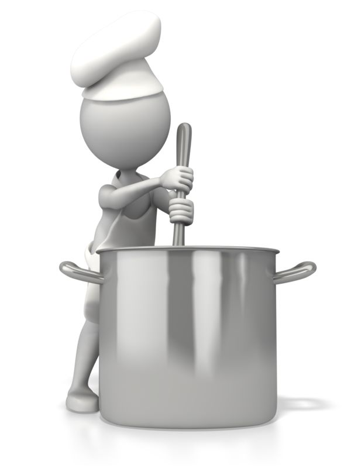
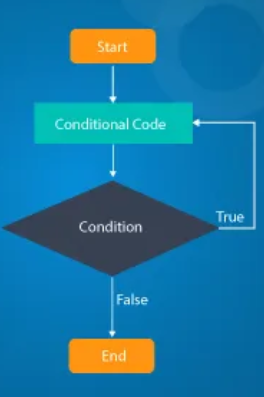

Javascript and the DOM
21/06/24
An analogy to describe JavaScript and its relationship to HTML and CSS.
Creating with code is fascinating world. All the parts work together to make an interact dream come true. HTML is key for your content and structure. Imagine you're making a soup, The HTML is your mirepoix, your meat, your bones, and anything big and chunky you want in there. Like soup HTML is the meat of your website. Its the words and pictures. Everything you need to inform people of what your website is and does.
The CSS is your herbs, spices, pastes and sauces that you want to add flavour and style to your soup. Flavours and styles is what CSS and herbs have in common. CSS is used to make things pop! Putting the right information, the right flavour in the right place. Without your CSS you have a page with words on a screen. Flavourless water with some meat and veggies (which admittedly would still be tasty but it is lacking that flavour PUNCH!)
JavaScript is YOU! It's you using your equipment , the process of following instructions so that the soup is built with the functions of the recipe. Its knowing to use a low heat to toast your spices in oil. It is your trusty tasting spoon to know if you need add more salt. By using JavaScript to control how the user interacts with the webpage. It mirrors the way YOU interact with the equipment. IF you need to stir the pot you do, ELSE you would stop and add spice. JavaScript works in a similar way using arrays and loops to list things like a recipe lists steps. It creates functions and objects to do things on your webpage. It's the clicking buttons to do commands. Stir pot =thing happens - good soup , Click button =thing happens - good interactive website.

I like soups, and food! I also am coming to like coding. I hope you can understand how these two cool things relate!
Explain control flow and loops using an example process from everyday life
Control flow Control flow is the order in which your computer executes statements you have written. Control flow is running the lines of code from top to bottom. However there can be conditionals that change the flow and skip some code if needed. Enter Loops, a sequence of instructions for the code to continually repeat until a certain set condition is met.
Understand all that? No? Me to so I broke it down in my mind so you don't have to. A Loop is like a prep list. You have the tasks you need to complete, prioritising the most important ones first and going down. E.G:
Bake Cookies
Prep Veggies
Make Mayo
Prep Deli meats
Cut Bread
Clean Station
You might not finish the cookies before you start prepping the veggies or making mayo, But you constantly check the list and tick off the things you have done. Once you have finished your list you can give yourself a high five and move on to service. Loops and the control flow work in a similar way. As the control flow reads the code it sees when you have a Loop in place. It will run the code again and again until a condition is met (you've finished a task on your prep list) once all the conditions and repetitions have been met you have achieve your outcome of finishing your list!
I hope that helps make sense of a tricky topic of loops and control flow. I'm off to put dinner in the oven and maybe something else I need to check my loop and see what I need to do.
Describe what the DOM is and an example of how you might interact with it.
DOM what is it? What does it mean for Web development and us? DOM, or Document Object Model, is a programming interface that represents structured documents like HTML as a tree of objects. It defines how to access, manipulate, and modify document elements using scripting languages like JavaScript. Here's a tree of what DOM looks like:

DOM is the tree in which we access flies and manipulate them. It's a digital file cabinet for your HTML and friends data. Organising your workflow in the DOM correctly is key to good workflow. Like any work station the optimal set up helps to achieve optimal results. The DOM is your work station, connecting you pens to your paper, your photos to frames. Everything is all under your DOM tree! If you wanted to get to a specific file in your file cabinet you would know its set up so the top draw is your photos(your blog folder) you would then open that and search for the file in that (blog folder) draw in the cabinet to access the file.
I hope this helps explain the cool way DOM helps us organise and create with code!
Explain the difference between accessing data from arrays and objects.
Arrays Think of arrays as lists. Imagine you have a list of fruits you need to pick up from the store:
let fruits = ["Apple", "Banana", "Cherry"];
//Each item in the list has a position, starting from 0. So, in our fruits array:
To access an item in the array, you use its position (also called an index):
"Apple" is at position 0.
"Banana" is at position 1.
"Cherry" is at position 2.
Objects
An object is more like a collection of key-values. Think of it as a way to group related information together under one name. Here's an example of an object representing one of our fruits with various properties:
let fruit = {
name: "Apple",
color: "Red",
taste: "Sweet"
};
In this fruit object:
"name" is a key with the value "Apple".
"color" is a key with the value "Red".
"taste" is a key with the value "Sweet".
The key differences in accessing data are that arrays use numerical indexes. Ideal for ordered collections where the position of each item matters. Where as objects access using named keys. Ideal for collections where each item has a unique identifier (key).Understanding the difference between arrays and objects is crucial because it helps you decide how to organize your data. Use arrays when you need an ordered list of items. Use objects when you need to group related data with unique identifiers.
I hope this helps you understand the how we use and get data from arrays and objects. All useful all data all good!
Explain what functions are and why they are
helpful.
Imagine you're learning to cook. You have a recipe for making a cake, which includes all the steps like mixing ingredients, baking the batter, and frosting the cake. Instead of writing out all these steps every time you want to make a cake, you could write them down once and refer to them whenever you need to bake a cake. This is similar to what functions do in development.
A function is like a recipe step in code. It's a block of code that is reusable, designed to perform a task. You define a function once, and then you can use (or "call") it whenever you need it, without having to rewrite the same code over and over again
Here's what a function that adds two numbers together would look like:
functionaddNumbers(a, b) {
returna + b;
}So with this cool little function how is it helpful? Well they are great tools that can be reused and help organize your code. Once you've written a function, you can use it as many times as you need without rewriting the code. This saves time and effort. Functions also help keep your code organized and easier to understand. Instead of a long list of instructions, you can break your code into manageable chunks.
functionmakeCake() {
mixIngredients();
bakeBatter();
frostCake();
}
functionmixIngredients() {
console.log("Mixing ingredients...");
}
functionbakeBatter() {
console.log("Baking the batter...");
}
functionfrostCake() {
console.log("Frosting the cake...");
}
makeCake();
// Output:// Mixing ingredients...// Baking the batter...// Frosting the cake...
Functions are great! They allow you to avoid writing the same code multiple times, reducing errors and making your code easier to maintain.
functiongreet(name) { console.log("Hello, "+ name + "!"); } greet("Alice"); greet("Bob"); greet("Charlie"); // Output:// Hello, Alice!// Hello, Bob!// Hello, Charlie!
Functions can help make you code look sleek and fly. They can hide complex details. Meaning you can focus on the bigger picture stuff. You can even use a function without knowing exactly how it works internally. Its coding magic
functions are powerful tools in Web Development that help you write clean, code. They allow you to reuse code, organize your tasks, avoid repetition, and simplify complex problems. They simply can do it all!
I hope this helps you understand the world of Javascript and code a bit better. I know im still learning and getting to grips with all of it and writing all of this down really helped me get a (small but good) grasp on whats going on!
Sam.